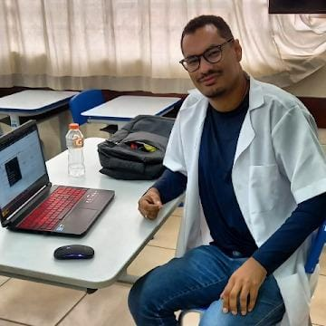

Quem assina este arquivo
Sobre o Autor
Professor, pesquisador e responsável pelo projeto Cientistas Negros.

Professor de Física, Matemática, Programação e Robótica — SEED
Robert
- Mestre em Ensino de Ciências Naturais — Universidade Tecnológica Federal do Paraná (UTFPR), Programa de Pós-Graduação em Ensino de Ciências Humanas, Sociais e da Natureza (PPGEN).
- Especialista em Educação Matemática e Ciências — Universidade Tecnológica Federal do Paraná (UTFPR).
- Licenciatura em Ciências Naturais e Matemática — Física — Universidade Federal de Mato Grosso (UFMT).
- Membro do STEM Education Research Group da UTFPR, liderado pelo pesquisador Dr. Paulo Sérgio de Camargo Filho, onde contribuiu com pesquisas sobre aplicações no campo da Acústica, investigando Modelagem Matemática e Análise Física Experimental de Modos Vibracionais em Placas Elásticas, com foco na expansão da Teoria de Kirchhoff-Love para Figuras de Chladni em Geometrias Quadradas com Condições de Contorno Reais.
- Professor de Física, Matemática, Programação e Robótica pela SEED.
- Experiência com linguagem de programação, Machine Learning e Data Science com Python.